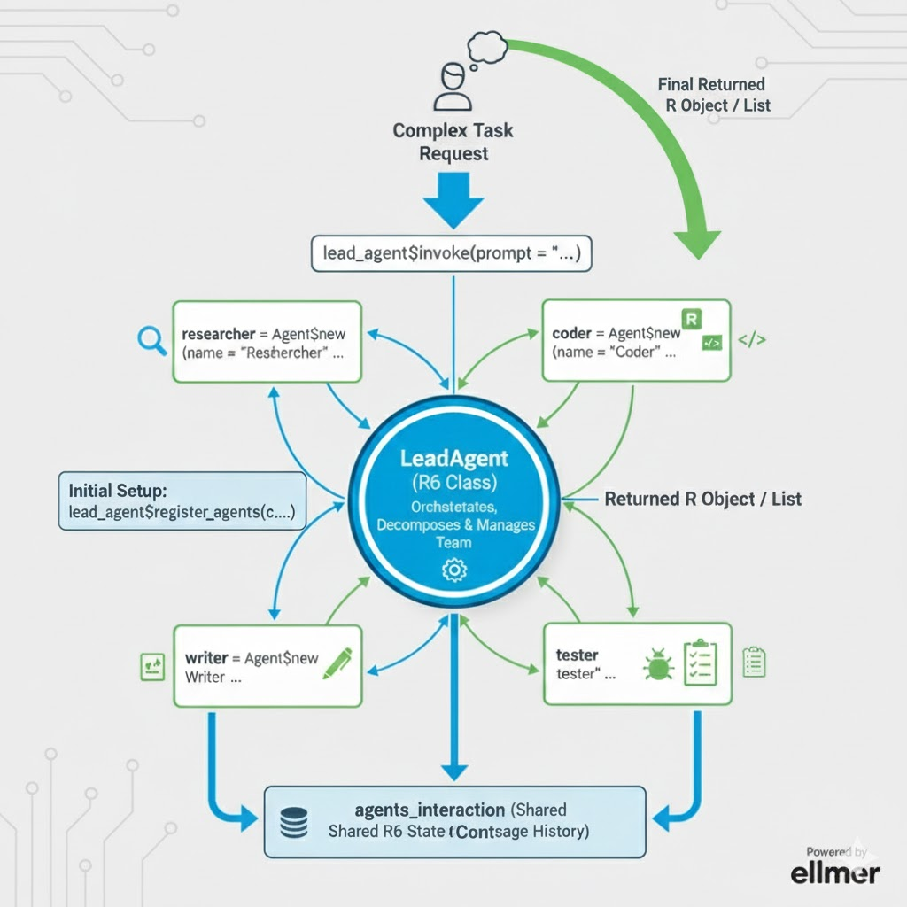

Глава 6 Разработка мультиагентных систем (пакет mini007)
6.1 Видео
6.1.1 Тайм-коды
- 00:00 — Введение
- 01:08 — Создание объекта класса Agent
- 03:13 — Суммаризация и очистка переписки с агентом
- 04:48 — Добавление сообщений в переписку с агентом
- 06:00 — Обновление системного промпта агента
- 06:30 — Экспорт и импорт истории переписки с агентом
- 07:09 — Управление бюджетом агента (лимиты токенов)
- 09:20 — Генерация и выполнение R-кода с помощью агента
- 11:43 — Проверка качества ответов модели (LLM-as-a-judge)
- 15:17 — Создание и добавление агенту инструментов
- 18:56 — Как устроены мультиагентные системы (теория)
- 20:43 — Создание мультиагентной системы с помощью пакета mini007
- 24:58 — В чём преимущества мультиагентных систем
- 25:56 — Broadcasting: отправка одного запроса каждому агенту
- 29:07 — Human-in-the-loop: контроль системы человеком
- 33:44 — Диалог двух агентов между собой
- 39:08 — Как упаковать мультиагентную систему в интерфейс чата
- 42:24 — Заключение
6.3 Конспект
6.3.1 Что такое мультиагентная система (MAS)?
Если кратко: это экосистема, где несколько специализированных AI-агентов взаимодействуют друг с другом для достижения общей цели. Вместо того чтобы просить одну модель «быть экспертом во всём», мы создаем команду узких специалистов.
6.3.2 Анатомия системы (разбор схемы)
Архитектура, которую мы реализуем с помощью пакетов экосистемы ellmer / mini007, строится на четырех «китах»:

6.3.2.1 1. LeadAgent (Оркестратор)
Это «директор» системы, реализованный через R6 класс. Его задачи:
- Декомпозиция: Разбить ваш сложный запрос (например, «Проанализируй продажи и напиши отчет») на цепочку понятных задач.
- Делегирование: Назначить задачу конкретному исполнителю.
- Контроль: Убедиться, что финальный результат соответствует ожиданиям.
6.3.2.2 2. Agent - Специализированные агенты (Роли)
Каждый агент — это изолированная сущность со своим системным промптом и набором инструментов (tools):
-
Researcher: Имеет доступ к поиску и базам данных. -
Coder: Пишет чистый R-код. -
Tester: Запускает этот код и проверяет его на ошибки (Unit testing). -
Writer: Агрегирует технические данные в читаемый текст.
6.3.3 Класс Agent
Как я уже упоминал выше, пакет mini007 предоставляет нам 2 основных класса: Agent и LeadAgent, для начала разберёмся с Agent.
Класс Agent строится поверх объекта класса Chat из пакета ellmer.
library(mini007)
# Создание агента ---------------------------------------------------------
## создаём объект chat
chat <- ellmer::chat_google_gemini(
model = 'gemini-2.5-flash'
)
## Создаём агента
text_analyzer <- Agent$new(
name = "Анализатор тематики текстов",
instruction = "ТЫ агент который анализирует длинные тексты, и выдаёт список 5 ключевых поинтов из текста.",
llm_object = chat
)При создании агента вам необходимо дать ему имя, в instruction прописать его системный промпт, и передать объект класса Chat в аргумент llm_object.
С помощью свойства agent_id мы можем получить идентификатор агента, а в llm_object хранится добавленный при создании агента объект чата:
# Основные свойства и методы агента ---------------------------------------
## id агента
text_analyzer$agent_id
## объект chat
text_analyzer$llm_object6.3.3.1 Отправка запроса и управление историей диалога
Для общения с агентом, и очистки диалога используйте следующие методы:
* invoke() - отправить агенту запрос
* messages - посмотреть историю сообщений
* clear_and_summarise_messages() - суммаризация и очистка истории сообщений
* keep_last_n_messages() - Оставить n последних сообщений диалога
* reset_conversation_history() - Полная очистка истории диалога
## запрос агенту
text_analyzer$invoke("Прочитай текст по ссылке https://github.com/feddelegrand7/mini007")
## история сообщений
text_analyzer$messages
## получить содержание переписки и очистить историю сообщений
text_analyzer$clear_and_summarise_messages()
text_analyzer$messages
## Оставить только несколько последних сообщений
text_analyzer$invoke("Прочитай текст по ссылке https://github.com/feddelegrand7/mini007")
text_analyzer$invoke("Проранжируй их в порядке убываения, от наиболее важного до наименее важного")
text_analyzer$invoke("Теперь оставь только самый главный поинт, и объясни его подробнее")
text_analyzer$messages
text_analyzer$keep_last_n_messages(n = 2)
text_analyzer$messages
## сброс истории переписки
text_analyzer$reset_conversation_history()Так же есть метод add_message(), который позволяет добавлять сообщения в историю диалога с различными ролями, аргументы данного метода:
* role - “user”, “assistant” или “system”
* сontent – текст сообщения
Добавленные сообщение агент будет обрабатывать так же как и сгенерированные через реальный диалог с ним.
## Добавление сообщений в историю агента вручную
text_analyzer$add_message('user', 'Ты бы мог проанализировать какой то текст и выдать основные тезисы?')
text_analyzer$add_message('assistant', 'Конечно, ты можешь предоставить мне ссылку на текст, и я проанализирую его.')
text_analyzer$messages
## дальнейшее общение может быть продолжено тсходя из добавленных сообщений
text_analyzer$invoke("Дай краткие итоги о чём мы с тобой общались")Метод update_instruction() позволяет вам в любой момент редактировать системный промпт агента:
# Обновление системного промпта -------------------------------------------
text_analyzer$update_instruction("Ты специалист по анализу данных на языке R, помогаешь в разработке и анализе кода.")В отличае от обычного Chat из пакета ellmer агент позволяет вам экспортировать и импортировать в json файлы ваши диалоги:
# Экспорт и импорт истории переписки --------------------------------------
text_analyzer$reset_conversation_history()
text_analyzer$invoke("Что такое язык R, его основные предназначения?")
text_analyzer$messages
## экспорт истори
text_analyzer$export_messages_history("r_lang_history.json")
text_analyzer$reset_conversation_history()
text_analyzer$messages
## импорт истории
text_analyzer$load_messages_history("r_lang_history.json")
text_analyzer$messages6.3.3.2 Управление бюджетом
Отдельные методы позволяют управлять бюджетом на использование API:
# управление бюджетом -----------------------------------------------------
## установка бюджета в 5$
text_analyzer$set_budget(5)
## что делать при достижении бюджета
text_analyzer$set_budget_policy(on_exceed = "ask", warn_at = 0.9)
## проверка расходов
text_analyzer$get_usage_stats()6.3.3.3 Генерация и выполнение R кода
Агенты могут по вашему запросу генерировать, и сразу выполнять R код:
# выполнение R кода -------------------------------------------------------
## создаём агента-разработчика на языке R
r_assistant <- Agent$new(
name = "R Code Assistant",
instruction = "Ты эксперт в разработке и аналитике на языке R.",
llm_object = chat
)
## задаём промпт для разработки кода
r_assistant$generate_execute_r_code(
code_description =
"Используй ggplot2, сгенерируй график типа scatterplot по расходу топлива на шоссе
и расход топливау в городе используя набор данных mpg,
цвет точек сделай красным",
validate = TRUE,
execute = TRUE,
interactive = FALSE
)6.3.3.4 Проверка качества ответов от LLM модели
Метод $validate_response() позволяет проверить качество полученного ответа, и имеет следующие аргументы:
-
prompt– Запрос пользователя -
response– Текст ответа модели для проверки -
validation_criteria– Описание критериев проверки -
validation_score– Пороговое значение, при котором ответ считается корректным (по умолчанию 0.8)
## Пример - 1: проверка достоверности
fact_checker <- Agent$new(
name = "fact_checker",
instruction = "Ты ассистент по проверке фактов.",
llm_object = chat
)
prompt <- "Какая столица Алжира?"
response <- fact_checker$invoke(prompt)
validation <- fact_checker$validate_response(
prompt = prompt,
response = response,
validation_criteria = "Ответ должен быть точным, и в качестве столицы надо указать Алжир",
validation_score = 0.8
)
validation
## Пример -2: Проверка длинны и стиля текста
content_agent <- Agent$new(
name = "content_creator",
instruction = "Ты ассистент по разработке рекламных текстов",
llm_object = chat
)
prompt <- "Напиши рекламное объявление об Алжирских фиников, длинной не более одного предложения."
response <- content_agent$invoke(prompt)
validation <- content_agent$validate_response(
prompt = prompt,
response = response,
validation_criteria = "Ответ должен быть не более 15 слов, написан профессиональным тоном и рекламировать Алжирские финики",
validation_score = 0.75
)
validation$feedbackВарианты использования:
- Контроль качества - Перед публикацией необходимо убедиться, что ответы соответствуют стандартам содержания.
- Проверка фактов - Убедитесь, что ответы содержат достоверную информацию.
- Соответствие стилю - Проверьте, соответствуют ли ответы требованиям к тону, длине или формату.
- Фильтрация по безопасности - Проверка соответствия контента критериям безопасности и уместности.
- A/B-тестирование - сравнение качества ответов в разных моделях или при использовании разных запросов.
6.3.3.5 Работа с инструментами
Так же как и в обычный ellmer::Chat, в Agent можно добавить любое количество инструментов:
## Создаём агента
weather_agent <- Agent$new(
name = "weather_assistant",
instruction = "Ты ассистент по прогнозу погоды.",
llm_object = chat
)
## создаём инструменты
weather_function_algiers <- function() {
msg <- glue::glue(
"35 градусов по цельсию, солнечно и без осадков."
)
msg
}
get_weather_in_algiers <- ellmer::tool(
fun = weather_function_algiers,
name = "get_weather_in_algiers",
description = "Запрос данных о погоде в Алжире."
)
weather_function_berlin <- function() {
msg <- glue::glue(
"10 градусов по цельсию, холодная погода"
)
msg
}
get_weather_in_berlin <- ellmer::tool(
fun = weather_function_berlin,
name = "get_weather_in_berlin",
description = "Предоставляет данные о погоде в Берлине, Германия."
)
weather_agent$register_tools(
tools = list(
get_weather_in_algiers,
get_weather_in_berlin
)
)
## Посмотреть список инструментов
weather_agent$list_tools()
## вызов инструментов
weather_agent$invoke("Какая погода в Алжире?")
## удаление инструментов
weather_agent$remove_tools('get_weather_in_algiers')
weather_agent$list_tools()
weather_agent$clear_tools()
weather_agent$list_tools()Но Agent, в отличие от ellmer::Chat, умеет самостоятельно разрабатывать и добавлять в свой арсенал иснтрументы:
## автоматическое создание инструмента
weather_agent$generate_and_register_tool(
description = "Создай инструмент, который использует httr для вызова API open-meteo https://open-meteo.com/en/docs, чтобы получить текущую погоду в любом городе мира"
)
weather_agent$list_tools()
weather_agent$invoke(
prompt = "Какая сейчас погода в Хургаде (Hurghada), Египет?"
)6.3.4 Класс LeadAgent: Разработка мультиагентных систем
Если Agent является базовой объектной единицой в мультиагентных системах, то LeadAgent это оркестратор, который реализует:
- Память и идентификация каждого агента посредством uuidистории сообщений.
- Встроенная декомпозиция и делегирование задач с помощью LLM.
- Координация действий между агентами с цепочкой результатов.
Для создания мульти агентной системы вам необходимо создать одного LeadAgent, и отдельно любое количество узкоспециализированных Agent.
library(mini007)
library(ellmer)
## создаём объект chat
llm <- ellmer::chat_google_gemini(
model = "gemini-2.5-flash"
)
business_agent <- Agent$new(
name = "business",
instruction = "Ты анализируешь бизнес-контекст и цели. Сфокусируйся на смысле бизнеса, а не на технических деталях.",
llm_object = llm
)
metrics_agent <- Agent$new(
name = "metrics",
instruction = "Ты опытный data-аналитик. Предлагай осмысленные метрики и KPI на основе бизнес-контекста.",
llm_object = llm
)
code_agent <- Agent$new(
name = "code",
instruction = "Ты R-разработчик. Пиши чистый, воспроизводимый R-код с использованием tidyverse.",
llm_object = llm
)
writer_agent <- Agent$new(
name = "writer",
instruction = "Ты пишешь понятные аналитические отчёты для нетехнических менеджеров.",
llm_object = llm
)
lead_agent <- LeadAgent$new(
name = "lead",
llm_object = llm
)
lead_agent$register_agents(
list(
business_agent,
metrics_agent,
code_agent,
writer_agent
)
)
prompt <- "
У нас есть онлайн-сервис по подписке.
Пользователи могут оформлять подписку, отменять её и возвращаться после оттока.
Подготовь аналитический отчёт:
- объясни бизнес-контекст
- предложи ключевые метрики
- приведи R-код для их расчёта
- напиши короткое резюме для менеджмента
"
# построение плана выполнения задачи
plan <- lead_agent$generate_plan(prompt)
# выполнение задантя
result <- lead_agent$invoke(prompt)
# посмотреть всю цепочку выполнения
lead_agent$agents_interaction
# визуализация плана
lead_agent$visualize_plan()LeadAgent имеет следующие методы:
-
register_agents()- для регистрацииAgent -
generate_plan()- для генерации плана, т.е. нарезки большой задачи на подзадачи, и распределения их между агентами -
visualize_plan()- визуальное отображение цепочки агентов в сгенерированном плане -
invoke()- для получение задачи от пользователя
6.3.4.1 Broadcasting
Метод broadcast() позволяет вам передать один и тот же запрос всех зарегестрированным агентам, а метод judge_and_choose_best_response() позволяет LeadAgent выбрать лучший из полученных от разных Agent ответов:
library(mini007)
library(ellmer)
## создаём объект chat
llm <- ellmer::chat_google_gemini(
model = "gemini-2.5-flash"
)
## создаём объект chat
fls_25 <- ellmer::chat_google_gemini(
model = "gemini-2.5-flash"
)
fls_25_agent <- Agent$new(
name = "flash 2.5",
instruction = "Ты разработчик Senior уровня на языке R.",
llm_object = fls_25
)
fls30 <- ellmer::chat_google_gemini(
model = "gemini-3-flash-preview"
)
fls_30_agent <- Agent$new(
name = "flash 3",
instruction = "Ты разработчик Senior уровня на языке R.",
llm_object = fls30
)
lead_agent <- LeadAgent$new(
name = "lead",
llm_object = llm
)
lead_agent$register_agents(c(fls_25_agent, fls_30_agent))
lead_agent$broadcast(prompt = "Дай мне пример построения графика-воронки (funnel) с помощью пакета ggplot2. Данные: просмотры 1050, сеансы 102, бросили в корзину 30, заказали 5, покупки 2")
lead_agent$broadcast_history
# Lead agent сам выбирает лучший ответ
best_answer <- lead_agent$judge_and_choose_best_response(
"Дай мне пример построения графика-воронки (funnel) с помощью пакета ggplot2. Данные: просмотры 1050, сеансы 102, бросили в корзину 30, заказали 5, покупки 2"
)
# выбранный ответ
best_answer$chosen_responseКейсы применения:
- Сравнить стили ответов разных агентов (писатель / кодер / менеджер)
- Проверить разные модели / параметры / провайдеры
- Быстрый тест без влияния на основной контекст
6.3.4.2 Human in the loop
Human-in-the-Loop (HITL) — это подход, при котором человек сознательно включён в цикл автоматизированного процесса или системы с ИИ/агентами, чтобы:
- наблюдать за работой системы;
- в нужные моменты вмешиваться;
- подтверждать, корректировать или отклонять предложения, которые делает автоматическая часть.
По сути, это баланс между автоматизацией и человеческим контролем — машина делает рутинное, а человек остаётся «на страже», особенно в сложных или неоднозначных ситуациях.
HITL часто используют там, где риск ошибок высок, а контекст важен: безопасность, медицина, финансы, управление автономными агентами и т. д. — именно там человеческий опыт дополняет алгоритмическое принятие решений.
В примере ниже, я строю мульти агентную систему для написание публикаций в telegram канал. Вся система состоит из следующих агентов:
- Researcher - Акцент на поиске нужной для публикации информации
- Analyst - Анализирует собранный материал
- Summarizer - Делает из большой публикации саммари, для формата поста в telegram
- Editor - Финальная вычитка и правки публикации
Далее после генерации плана выполнения моей задачи я использую метод set_hitl(), в котором я могу указать номер шага в плане, на котором система должна оставиться, показать мне текущий результат, и спросить что далее делать:
- Продолжайте выполнение рабочего процесса в текущем виде;
- Вручную измените ответ на указанном шаге и продолжите выполнение рабочего процесса;
- Остановка выполнения рабочего процесса (жесткая ошибка);
library(mini007)
llm <- ellmer::chat_google_gemini(
model = "gemini-2.5-flash"
)
lead_agent <- LeadAgent$new(
name = "Lead",
llm_object = llm
)
researcher_agent <- Agent$new(
name = "Researcher",
instruction = "Твоя основная задача - собрать всю необходимую информацию по заданной тематике для написания статьи.",
llm_object = llm
)
analysis_agent <- Agent$new(
name = "Analyst",
instruction = "Ты анализируешь собранные для статьи данные и выделяешь ключевые идеи.",
llm_object = llm
)
summary_agent <- Agent$new(
name = "Summarizer",
instruction = "Ты делаешь краткое и структурированное резюме текста.",
llm_object = llm
)
editor_agent <- Agent$new(
name = "Editor",
instruction = "Ты специалист по написанию контента для технических Telegram каналов. Твоя задача подготовь финальную версию текста для публикации с исправлением всех ошибок.",
llm_object = llm
)
lead_agent$register_agents(
list(
researcher_agent,
analysis_agent,
summary_agent,
editor_agent
)
)
text_input <- "
Напиши пост для моего telegram канала, о том, что такое Google BigQuery. Учти ограничение telegram в 4000 символов на сообщение.
Текст доолжен помещаться в 1 сообщение канала.
Текст должен быть подготовлен и написан на русском языке.
"
# смотрим план выполнения
plan <- lead_agent$generate_plan(text_input)
# ВКЛЮЧАЕМ HITL
# Остановка ПОСЛЕ шага Analyst
lead_agent$set_hitl(4)
result <- lead_agent$invoke(text_input)6.3.4.3 Диалог двух агентов
Так же пакет mini007 позволяет вам организовать диалог двух агентов, у которых могут быть одинаковые, или же противополжные задачи, как у заказчика и исполнителя, либо как у CEO и CMO.
В примере ниже я организовал диалог двух агентов:
- barmen - выступает в роли заказчика, это бармен, который хочет заказать разработку веб приложения для выбора коктелей по разным параметрам, ему необходимо сформулировать тезническое задание для исполнителя.
- developer - разработчик Shiny приложений, который будет реализовывать задачу от barmen, ему необходимо проанализировать задачу, и разработать Shiny приложение под требования barmen.
Для реализации диалога вам необходимо создать 2 Agent, зарегистрировать их в LeadAgent, и инициализировать из диалог с помощью метода agents_dialog.
library(mini007)
llm <- ellmer::chat_google_gemini(
model = "gemini-2.5-flash"
)
barmen <- Agent$new(
name = "barmen",
instruction = paste0(
"Ты отлично разбираешься в коктейлях, ",
"знаешь какие коктейли пользуются наибольшим спросом, ",
"понимаешь по каким параметрам надо строить возможность выбора коктейлей, и какие наиболее популярные в них ингридиенты.",
"Твоя задача получить приложение, с помощью которого твои гости будут заказывать коктейли.",
"Но самостоятельно ты не разрабатываешь код, не программируешь, ты выступаешь в роли заказчика, который только описывает требования к приложению."
),
llm_object = llm
)
developer <- Agent$new(
name = "developer",
instruction = paste0(
"Ты разработчик на языке R senior уровня. ",
"Специализируешься на разработке Shiny приложений под заказы пользователей. ",
"Изначально тебе всегда надо выяснить требования заказчика, и опираясь на них разработать приложение."
),
llm_object = llm
)
lead_agent <- LeadAgent$new(
name = "Leader",
llm_object = llm
)
lead_agent$register_agents(c(barmen, developer))
result <- lead_agent$agents_dialog(
prompt =
"Напишите простое Shiny приложение для просмотра рецепта коктейлей, которое будет как интерактивное меню в баре.
В результате вы должны предоставить готовый код приложения.",
agent_1_id = barmen$agent_id,
agent_2_id = developer$agent_id,
max_iterations = 5
)
# информация о диалоге
## достингут ли консенсус
result$consensus_reached
## количество итераций
result$iterations_used
## результат работы
result$final_responseС помощью аргумента max_iterations вы можете ограничить количество итераций диалога. В итоге за указанное количество итераций агенты (Agent) могут либо прийти к общему решению, либо нет, во втором случае окончательное решение будет принимать LeadAgent.
6.3.5 Интеграция между mini007 и shinychat
На момент записи этого видео урока, и написания этой главы я использовал mini007 версии 0.3.0, и на данный момент пакет не поддерживает глубокую интеграцию с интерфейсами созданными через shinychat, т.е.:
- сейчас нет возможности из коробки создать асинхронный интерфейс чата
- не поддерживается стримминг, т.е. постепенный вывод полученный от LLM
Ещё одним минусом мультиагентных систем является скорость их работы, поскольку это целая цепочка запросов, и проверок. Но организовать максимально базовый однопоточный интерфейс чата можно:
library(shiny)
library(mini007)
library(shinychat)
ui <- bslib::page_fillable(
chat_ui(
id = "chat",
messages = "**Hello!** How can I help you today?"
),
fillable_mobile = TRUE
)
server <- function(input, output, session) {
# объект чата
llm <- ellmer::chat_google_gemini(
model = "gemini-2.5-flash"
)
# оркестратор
lead_agent <- LeadAgent$new(
name = "Lead",
llm_object = llm
)
# агенты
researcher_agent <- Agent$new(
name = "Researcher",
instruction = "Твоя основная задача - собрать всю необходимую информацию по заданной тематике для написания статьи.",
llm_object = llm
)
editor_agent <- Agent$new(
name = "Editor",
instruction = "Ты специалист по написанию контента для тезнических Telegram каналов. Твоя задача подготовь финальную версию текста для публикации с исправлением всех ошибок.",
llm_object = llm
)
smm_agent <- Agent$new(
name = "smm",
instruction = "Ты специалист в SMM, умеешь подготавливать посты специализированно под каждую социальную сеть в том числе Telegram.",
llm_object = llm
)
# регистрируем исполнителей
lead_agent$register_agents(
list(
researcher_agent,
editor_agent,
smm_agent
)
)
observeEvent(input$chat_user_input, {
stream <- lead_agent$invoke(input$chat_user_input)
chat_append("chat", stream)
})
}
shinyApp(ui, server)Т.е. UI часть остаётся такое же как и в чатах создаваемых в интеграции с ellmer, а в серверной части мы используем метод invoke().
6.3.6 Преимущества мультиагентных систем
Итак, подводя итоги я бы хотел объяснить в чём заключаются преимущества мультиагентных систем.
Одна LLM * плохо держит роли (аналитик / разработчик / менеджер) * смешивает рассуждения * код часто «плывёт» * отчёт получается либо слишком технический, либо слишком абстрактный
Мульти агентная система
* разделяем роли
* каждый агент думает в своём контексте
* LeadAgent собирает и проверяет результат как менеджер
6.4 Вопросы для самопроверки
В чем заключается основная роль класса
LeadAgentв мультиагентной системе?LeadAgentвыступает в роли оркестратора (менеджера). Он декомпозирует сложный запрос пользователя на подзадачи, делегирует их конкретным специализированным агентам и координирует передачу контекста между ними для получения финального результата.Какой метод пакета
Для управления расходами используется методmini007позволяет ограничить расходы на API и что произойдет при достижении лимита?$set_budget(), где указывается сумма в долларах. С помощью$set_budget_policy()можно настроить поведение системы: например, выдать предупреждение при достижении 90% лимита (warn_at = 0.9) или запрашивать разрешение пользователя на продолжение работы (on_exceed = "ask").Чем метод
Методbroadcast()отличается от стандартногоinvoke()в работе с LeadAgent?invoke()запускает последовательное выполнение плана, где агенты могут работать цепочкой. Методbroadcast()отправляет один и тот же запрос всем зарегистрированным агентам одновременно. Это полезно для сравнения ответов от разных моделей или агентов с разными ролями, чтобы потом выбрать лучший результат с помощьюjudge_and_choose_best_response().Как работает механизм Human-in-the-Loop (HITL) в цепочке выполнения задач?
С помощью метода$set_hitl(n)можно остановить выполнение плана на определенном шаге. Система поставит процесс на паузу и позволит человеку просмотреть промежуточный результат, после чего пользователь может либо разрешить продолжение, либо скорректировать ответ вручную, либо полностью остановить выполнение.В чем преимущество использования специализированных агентов по сравнению с одним общим чат-объектом
Специализированные агенты лучше удерживают заданную роль и контекст (например, только код или только бизнес-аналитика). Это предотвращает «галлюцинации» и смешивание стилей, а наличие общего пространства памяти (ellmer?Shared State) позволяет системе проверять и исправлять ошибки одного агента силами другого (например, агент-тестировщик проверяет код агента-разработчика).Может ли агент самостоятельно расширять свои возможности без написания кода разработчиком?
Да, вmini007есть метод$generate_and_register_tool(). С его помощью агент может на основе текстового описания задачи сам написать R-код функции, превратить её в инструмент (tool) и сразу добавить в свой арсенал для использования.